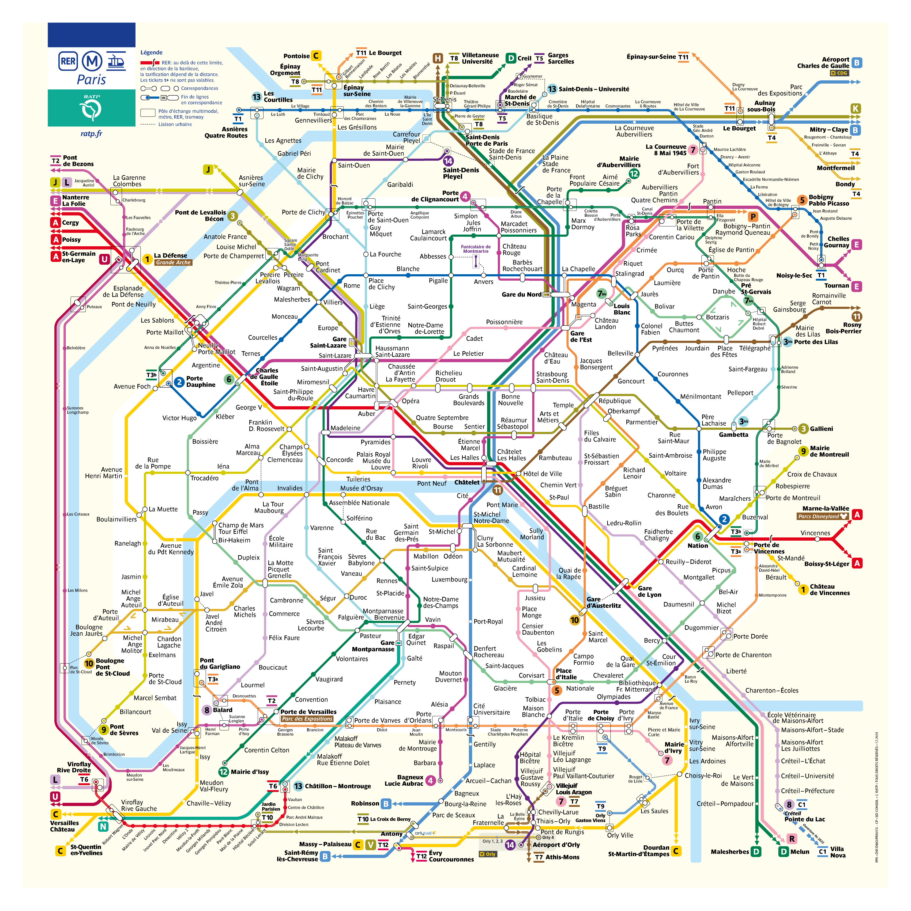

Se déplacer à Paris
Paris dispose d'un excellent réseau de transports en commun.
Les options disponibles
- Le Métro : Le moyen le plus rapide. 16 lignes quadrillent la ville.
- Le RER : Idéal pour traverser Paris rapidement ou aller en banlieue.
- Le Bus : Parfait pour admirer la ville pendant le trajet.
- Vélib' : Des milliers de vélos en libre-service.
Carte Interactive
Localisez-vous dans Paris :
Plan du Métro
Consultez les lignes pour planifier votre trajet :
